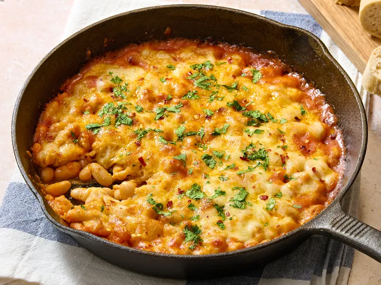

Home
Cheesy White Bean and Tomato Bake

Description
This cheesy white bean and tomato bake is a one-skillet dish that begins with plain canned white beans. Add just a few simple things to turn them saucy and fragrant with a golden cheese crust.
Ingredients
- 2 tablespoons olive oil
- 3 cloves garlic, minced, or more to taste
- 2 tablespoons tomato paste
- 2 tablespoons dry white wine, such as Pinot Grigio or Sauvignon Blanc
- 2 (15 ounce) cans white beans, drained and rinsed
- 1/2 cup boiling water
- 1/2 teaspoon kosher salt, or to taste
- freshly ground black pepper, to taste
- 1 1/2 cups shredded mozzarella cheese, or a mix of mozzarella and fontina cheeses
- 1/4 cup freshly grated Parmesan cheese
- chopped parsley, red pepper flakes, or a drizzle of olive oil for garnish (optional)
Steps
- Step 1: Preheat the oven to 425 degrees F (220 degrees C). Set a 10-inch oven-safe skillet over medium heat and heat olive oil until warm. Add minced garlic and sauté until fragrant, 30 to 45 (don’t let it brown).
- Step 2: Stir in tomato paste and cook until slightly darker in color, 1 to 2 minutes.
- Step 3: Pour in white wine and stir, scraping up any browned bits from the bottom. Simmer just until mostly evaporated, 30 to 60 seconds.
- Step 4: Stir in white beans, boiling water, salt, and pepper. Mix until beans are evenly coated in the tomato mixture and everything looks saucy but not soupy.
- Step 5: Sprinkle Mozzarella and Parmesan cheeses evenly over the top.
- Step 6: Transfer the skillet to the preheated oven and bake until cheese is melted and bubbling, 10 to 12 minutes. For extra color, broil on high for 1 to 2 minutes until the top turns golden and slightly crisp around the edges.
- Step 7: Sprinkle with parsley or red pepper flakes if you like, and finish with a tiny drizzle of olive oil. Serve hot with crusty bread for dipping.